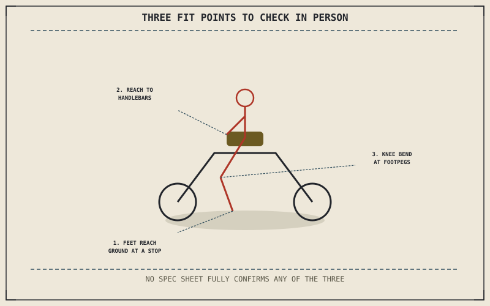

Chapter 15.1 narrowed the field to a category. Within that category, individual models still vary enough in seat height, reach, and weight that a spec sheet alone can't answer whether a specific motorcycle actually fits a specific rider — and the only real test for that is sitting on it, feet down, before any money changes hands.
Chapter 15.1 closed by pointing to exactly this second filter: whether a specific motorcycle actually fits the rider physically. This chapter is that filter.
Seat Height and Reach to the Ground
Chapter 5.5 already established seat height as a direct, honest consequence of suspension travel, not an independent number a manufacturer chooses freely — which means two motorcycles in the same category can carry meaningfully different seat heights for genuine engineering reasons, not just marketing variation. A rider who can't confidently plant both feet, or at least one foot solidly, at a stop is fighting the bike's basic stability at every red light, regardless of how well that same motorcycle might otherwise suit the actual use Chapter 15.1 described.
Reach to the Bars and Pegs
Chapter 13.4 already described a stock motorcycle's ergonomics as built around an assumed rider — a specific torso length, arm reach, and leg position — and that assumption varies by category exactly the way Chapter 14.2's tucked sportbike and Chapter 14.3's upright cruiser illustrated. Sitting on the actual bike reveals whether a rider falls inside that assumed range or outside it, in a way no spec sheet's seat height and wheelbase numbers fully capture on their own.
Seat height, reach to the bars, and reach to the ground are specific, individual measurements that vary meaningfully within a single category — and the only reliable way to check them against an actual rider is sitting on the actual motorcycle, not reading its spec sheet.

A diagram showing a rider checking three fit points on a motorcycle in person — feet reaching the ground at a stop, reach to the handlebars, and knee bend at the footpegs — none of which a spec sheet alone fully confirms.
Why This Can't Be Fully Solved on Paper
Two riders of identical height can have meaningfully different inseam length, torso proportion, and arm reach, and a published seat height figure says nothing about any of that individual variation. Chapter 13.4 already showed ergonomic modifications — bars, pegs, seat — as the way a rider closes a fit gap after purchase, but sitting on the actual bike beforehand reveals how large that gap actually is before committing to a specific model, rather than discovering it only after the purchase is already made.
A Common Misconception, Cleared Up Early
It's a common assumption that a published seat height figure and a rider's own inseam measurement are enough information to confirm fit without ever sitting on the actual motorcycle. Individual proportion, seat shape, and how the bike compresses under a rider's actual weight all affect real-world fit in ways a single seat height number can't capture, which is why this chapter treats sitting on the bike as a required step, not an optional confirmation of numbers already trusted.
Where This Leads
Chapter 15.3 turns to the real cost of ownership next, extending this part's honest accounting from physical fit to the ongoing financial commitment a purchase actually represents.
Key Concepts to Remember
- Seat height is a direct consequence of suspension travel, and confident footing at a stop matters regardless of how well the bike suits actual use otherwise.
- Bar and peg reach vary by category, and only sitting on the actual bike reveals whether a rider falls inside its assumed range.
- Individual proportion varies enough between riders of the same height that a published seat height figure alone can't confirm fit.
Cross-References
| ← Ch. 5.5 | Established seat height as a direct consequence of suspension travel; this chapter treats confident footing at a stop as a required fit check. |
| ← Ch. 13.4 | Established a stock motorcycle's ergonomics as built around an assumed rider; this chapter treats sitting on the bike as revealing whether that assumption actually holds. |
| ← Ch. 15.1 | Narrowed the field to a category by actual use; this chapter applies a second, physical filter within that narrowed category. |
| → Ch. 15.3 | Covers the real cost of ownership, beyond the purchase price. |